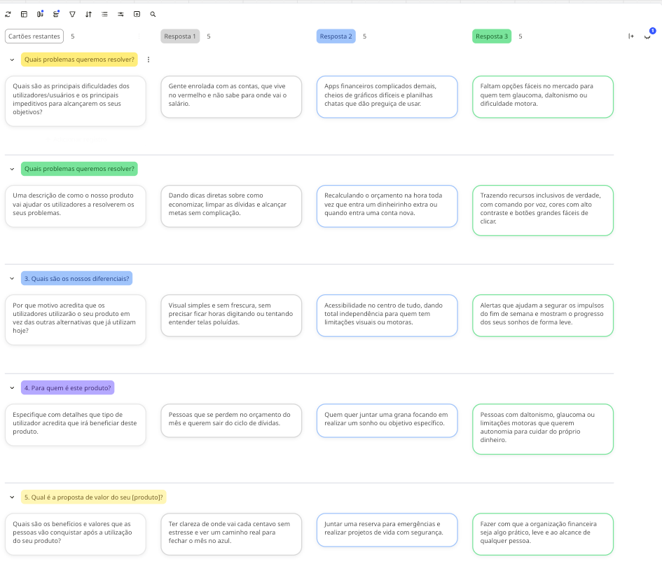

Etapa 3: Ideação
Plano de ação, fluxo de tarefas e identificação das telas.
Crazy 8

Plano de ação
Cinco perguntas-chave definiram o propósito do produto: que problema resolver, como, qual o diferencial, para quem e qual a proposta de valor.

Problema
Pessoas enroladas com as contas e apps financeiros complicados. Faltam opções fáceis para quem tem glaucoma, daltonismo ou dificuldade motora.
Diferenciais
Visual simples, acessibilidade no centro de tudo e alertas que ajudam a segurar os impulsos de gasto.
Para quem
Quem se perde no orçamento, quem quer juntar dinheiro para um sonho e pessoas com daltonismo, glaucoma ou limitações motoras.
Proposta de valor
Organização financeira prática, leve e ao alcance de qualquer pessoa, com clareza de para onde vai cada centavo.
Fluxo de tarefas e identificação das telas
Cada necessidade do usuário virou uma funcionalidade, e cada funcionalidade foi atribuída a uma tela do aplicativo.
| O que o usuário precisa fazer? (Necessidade) | Como o sistema atende essa necessidade? (Funcionalidade) |
|---|---|
| Visualizar as propostas do site. | Tela que mostra as propostas e objetivos do site. |
| Se cadastrar. | Tela de cadastro com os campos de e-mail, CPF, telefone, estado, cidade, idade, senha e confirmação de senha. |
| Entrar na sua conta. | Tela de login com e-mail/CPF e senha. |
| Saber se o usuário errou a senha, o CPF ou o e-mail. | Uma mensagem em vermelho avisando qual campo está errado. |
| Registrar o salário ou ganho fixo mensal de forma rápida. | Um campo simples e direto na tela inicial para inserir o valor base recebido no mês. |
| Adicionar valores inesperados (como bônus) e ver o impacto imediato. | Uma opção para adicionar valores inesperados e atualizar automaticamente no orçamento. |
| Controlar as dívidas e contas do mês para não esquecer de pagar. | Aba que lista as despesas com campos para valor e data de vencimento, gerando a soma do total de dívidas. |
| Definir objetivos financeiros (ex.: comprar um celular, fazer uma viagem). | Espaço para cadastrar o nome do objetivo e o valor total necessário, mostrando o progresso. |
| Colocar uma quantia mensal fixa que deseja guardar para o futuro. | Campo específico para o usuário registrar o valor que quer economizar mensalmente. |
| Saber quando vai conseguir alcançar o sonho ou a meta desejada. | Calcular o valor do sonho pela economia mensal (e rendas extras), exibindo o prazo previsto em meses para a conquista. |
| Ser alertado e conscientizado sobre a importância de ter um dinheiro guardado para imprevistos. | Uma seção que calcula automaticamente o valor ideal para a reserva do usuário (baseado nos gastos fixos dele) e incentiva esse hábito. |
| Nome de identificação da tela | Funcionalidades contidas nesta tela |
|---|---|
| Tela de Apresentação | Telas interativas e chamativas, mostrando como trabalhamos, importância e acesso ao login/criar conta. |
| Tela de Cadastro de Usuário | Formulário de criação de conta com os campos obrigatórios: e-mail, CPF, telefone, estado, cidade, idade, senha e confirmação de senha. |
| Tela de Login | Campos de identificação por e-mail/CPF e senha. Se estiver errado, mostra em vermelho. |
| Tela Inicial | Campo simples e direto na interface para registrar o salário ou ganho fixo mensal de forma rápida. Mostra o resumo do orçamento atualizado em tempo real. |
| Tela de Registros de Rendas Extras | Opção para adicionar valores inesperados (como bônus), com atualização automática imediata no orçamento geral. |
| Tela de Controle de Dívidas | Listagem detalhada de todas as despesas e contas do mês. Campos para o valor da conta e a data de vencimento. Soma automaticamente e exibe o total das dívidas acumuladas. |
| Tela para Definir Objetivos Financeiros | Espaço para cadastrar metas financeiras, informando o nome do objetivo e o valor total necessário. Exibição gráfica e percentual do progresso de cada meta. |
| Tela de Simulador de Prazos | Sistema que calcula o valor do sonho junto com a economia mensal e as rendas extras cadastradas. Exibição clara do prazo previsto para a conquista final da meta. |
| Tela de Planejamento de Economia | Campo específico para o usuário registrar a quantia mensal fixa que deseja guardar para o futuro. |
| Tela de Reserva de Emergência | Seção que calcula automaticamente o valor ideal da reserva financeira com base nos gastos fixos informados, junto com um bloco de texto educativo e alertas de conscientização sobre a importância de manter esse hábito. |
| Tela de Diagnóstico e Dicas | Painel que exibe o diagnóstico completo da saúde financeira do usuário, mostrando em detalhes quanto vai sobrar no mês, com dicas automatizadas sobre como gerir melhor o dinheiro. |